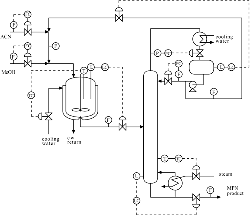

| [ Team LiB ] |
|
15.5 Further Plantwide Control ExamplesExamples and challenges of control of processes with recycle were presented in Section 15.2. In this section we give the reader more experience with plantwide control strategies by studying two more examples: MPN and HDA. Example 15.3: MPN Process and Instrumentation DiagramConsider the process flow sheet shown in Figure 15-17. Here, methanol is reacted with acrylonitrile to form MPN. A slight excess (2%) of ACN is supplied and essentially all of the MeOH is reacted. There is no purge stream, so the excess ACN appears in the MPN product stream. Here the recycle stream is liquid-phase distillate stream. Figure 15-17. Preliminary instrumentation diagram for an MPN process (adapted from Zhan and Grassi, 1999).The objective is to produce MPN at a specified rate, while satisfying product purity constraints. In Figure 15-17, there are nine control valves, representing nine degrees of freedom. Also shown are 13 measurements: seven flow, three level, two temperature, and one pressure. Clearly, there are not enough degrees of freedom to specify a setpoint value for every measured variable. Inventory variables, such as level and pressure, must be controlled; without feedback, these integrating variables could easily violate alarm limits. This means that four control valves must be used to control the three levels and the column pressure. We consider it an important exercise for the reader to attempt to place nine control loops on Figure 15-17. Please do this before reading any further. A Possible Solution to Example 15.3One possible solution is shown in Figure 15-18.
Figure 15-18. A typical P&ID for the MPN process. Problems with This SolutionThe main problem with this solution is that the control structure exhibits a high sensitivity in the recycle flow rate to small disturbances. This so-called snowball effect was discussed in Section 15.2. Luyben et al. (1999) have recommended that at least one control loop in the recycle flow path be flow controlled in order to minimize the snowball effect. Alternative Solution 1An alternative solution [designated plantwide control structure 1 by Zhan and Grassi (1999)] is shown in Figure 15-19. Here, a flow controller is used to regulate the mixed stream (recycle + ACN) flow rate by manipulating the distillate (recycle) flow rate; this allows the control structure to minimize the snowball effect. The distillate level controller manipulates the fresh ACN flow control valve. The other seven loops are identical to the previous solution shown in Figure 15-18. Figure 15-19. Plantwide control structure 1 developed by Zhan and Grassi (1999) for the MPN process.Other Alternative SolutionsThere are some alternative solutions that include flow control of a recycle loop stream. For example (alternative 2), the reactor outlet stream can be flow controlled. The reactor level can then be controlled by manipulating the ACN feed-flow valve (see Exercise 3). In addition, a reactor concentration sensor can be used to improve control (again, see Exercise 3). Example 15.4: HDA ProcessToluene hydrodealkylation (HDA) is one of the primary processes for the production of benzene. A simplified process and instrumentation diagram for an HDA process is shown in Figure 15-20. For clarity, we have omitted a number of details, such as pumps on distillation reflux streams and furnace combustion air dampers. Figure 15-20. Preliminary P&ID for an HDA process.The feed streams are high purity (99.98 mol%) toluene and hydrogen (96 mol% hydrogen, 4 mol% methane). The process operating objective is to produce a desired rate of benzene at a purity of 99.98 mol%. Because of coking considerations, a 5:1 hydrogen/aromatics ratio must be maintained at the reactor entrance. The reactor inlet pressure is to be maintained at just under 500 psig (the pressure of the hydrogen feed stream); the pressure drop between the feed stream mixing point and the flash drum is roughly 35 psi. The minimum reactor inlet temperature is 1150°F, while the maximum outlet temperature is 1300°F. The reactor exit stream must be immediately quenched to 1150°F to minimize secondary reactions. The primary reaction is an irreversible reaction of toluene and hydrogen to produce benzene and methane, while the secondary reaction is the reversible reaction of benzene to form diphenyl and hydrogen The selectivity decreases as the temperature increases. It is clear that a purge stream is necessary to eliminate methane from the process system. We consider it an important exercise for the student to attempt to place control loops on Figure 15-20. Please do this before analyzing the suggested solution shown in Figure 15-21. Use the following suggestions to guide your control structure development.
Figure 15-21. Plantwide control structure for an HDA process, as suggested by Luyben et al. (1999).Notice that there are 23 control degrees of freedom, since there are 23 control valves. It is not necessary that all these valves be used for feedback control; one or more valves may be held at a constant valve position. A Possible Solution to Example 15.4One possible solution to the HDA problem is shown in Figure 15-21. This solution was developed by Luyben et al. (1999). The important control structure decisions to note are as follows:
It should also be noted that only the basic control strategy is presented. In practice, ratio, feed forward, and cascade control will be added for improved control. Also, the control techniques presented in Section 15.3 can be used. The Art of Process EngineeringAt this point, you may be overwhelmed by the complexity of a plantwide control problem. Please realize that placing controllers on a process flow sheet is an "art," and different process engineers will often develop different control structures for the same process flow sheet. In practice, you will not develop these control strategies in isolation. At the process design (or retrofit) stage, a large number of engineers will be involved in the development of a control structure; this is truly a team effort, involving participants from the plant, the engineering design firm, and other contractors involved in automation. An operational description of the process automation system will evolve over many months of meetings. These discussions will lead to numerous iterations of the control structure. Experience during and after plant or control-system startup will normally lead to changes in this structure. Although computer simulation packages are widely available, a process engineer often gains insight about operating and design decisions using simple "back of the envelope" calculations, as shown in the next example. Example 15.5: HDA "Back of the Envelope" Material BalanceMuch insight about the effect of design decisions can be obtained by rough "back of the envelope" calculations. Here we consider the HDA flow sheet shown in Figure 15-22. The following assumptions are made to simplify the analysis: (1) only the primary reaction (toluene + hydrogen = benzene + methane) occurs, (2) a single purge stream of hydrogen and methane, (3) a pure benzene product stream, (4) pure toluene product and recycle streams. Figure 15-22. "Back of the envelope" material balance for the simplified HDA problem.A basis of 1 mole of toluene make-up (stream 1) is used. Here we use ni to represent a molar flow rate, where the subscript indicates the stream number. The reader should derive the following relationships (see Student Exercise 4). Toluene recycle (stream 10) flow: n10 = (1-XT)/XT, where XT is the single-pass conversion of toluene in the reactor. Hydrogen make-up (stream 2) flow: n2 = 1/(0.96-y7,H), where y7,H is the mole fraction of H2 in the purge stream (stream 7). Hydrogen recycle (stream 8) flow: Two of the major operating costs are the hydrogen make-up (raw material) and vapor recycle (stream 8, compressor costs). We can now quickly calculate the hydrogen make-up flow and vapor recycle as a function of the toluene conversion and hydrogen purge fraction. For example, consider a single pass toluene conversion of 0.7. The following table (Table 15-1) is quickly constructed; additional rows can be generated by considering other toluene conversions (see Student Exercise 4). Notice that there is a direct trade-off of hydrogen raw material costs with recycle compressor operating costs. Douglas (1988) finds that the incremental raw material cost is higher than the incremental recycle compression costs for these types of processes. Consideration of the secondary reaction in Equation (15.4) results in the simplified flow sheet shown in Exercise 5. |
| [ Team LiB ] |
|